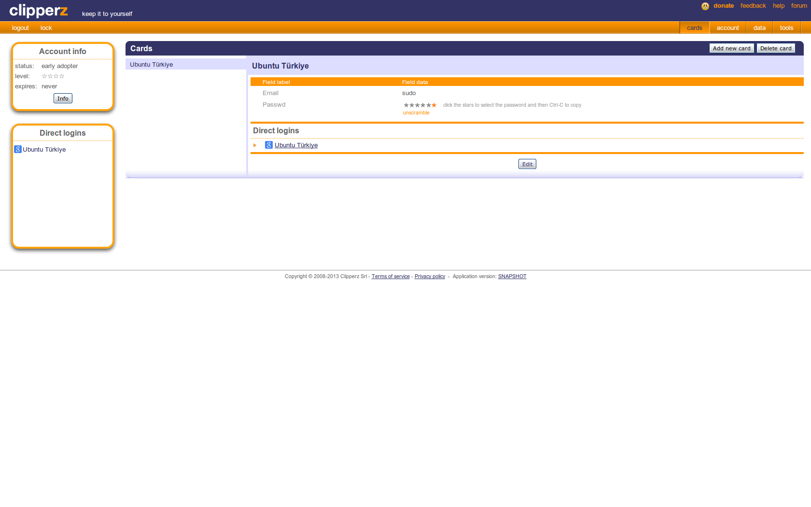

Bir finans firmasının araştırmasına göre ortalama 26 çevrimiçi servis için kullanıcılar 5 farklı parola kullanıyorlarmış.[1] Her hesabımız için farklı ve yeterli entropiye sahip bir parola kullanıp bütün bu parolaları akılda tutmak mümkün mü? Bu arada parola demişken XKCD klasiklerinden birini de paylaşmadan geçmeyelim.[2]
Bir önceki paragraftaki soruya benim cevabım hayır olduğundan bir süredir işimi görecek bir parola yöneticisi arıyordum. Bu yazının konusu olan Clipperz ile bu sayede tanıştım. Clipperz, LastPass gibi çevrimiçi çalışabilen fakat yerelinizde de sorunsuzca kullanabileceğiniz dijital bir kasa görevini üstleniyor. Böylelikle tek bir ana parola ile tüm kullandığınız servislere erişme imkânınız oluyor. Üstelik bir hesaba ait bilgilerin çalınması durumunda diğer hesaplarınızı nasıl koruyacağınızı düşünmenize gerek kalmıyor. Clipperz özel notlarınızı, kredi kartı bilgilerinizi, eğer kullanıyorsanız çeşitli yazılımlara ait anahtarları ve de parolalarınızı 256 bit anahtar uzunluğuna sahip AES şifreleme methodu ile şifreliyor.[3] (Aramızdaki kripto meraklıları için CTR modunun kullanıldığı notunu da düşelim.) Dikkate değer diğer bir özelliği de AGPL ile lisanslanmış özgür bir yazılım olması.
Clipperz’ı github’dan alıp kurulumuna geçmeden önce öne çıkan diğer özelliklerinden de biraz bahsetmekte fayda var. Yazının ilerleyen kısımlarında uygulamalarını göreceğimiz bu özellikler kabaca şöyle;
1) Çevrimdışı kopya
Bütün parolalarınızı Clipperz’a teslim ettiğinizi düşünün. Ortalama 19-20 haneli ve noktalama işaretlerinin de dahil olduğu bir karakter setinden oluşturulmuş bu parolaları bilgisayarınız dışında bir yerden bir hesabınıza erişmek istediğinizde muhtemelen hatırlayamayacaksınız. Çevrimdışı kopya özelliği ile sadece okunur modda ve güvenlikten taviz vermeden verinizin bir kopyasını USB belleğinize alabilir ve sürekli yanınızda taşıyabilirsiniz.
2) Doğrudan kimlik kanıtlama
Clipperz’la birlikte gelen bir javascript kodu sayesinde tarayıcınıza ekleyeceğiniz bir yerimi giriş yapmak için kullandığınız sitedeki formun kopyasını uygulamaya alabiliyor. Eğer hesap bilgilerinizi de bu forma eklerseniz Clipperz oturumunuzu açtıktan sonra tek bir tıklama ile bu kayıtlı hesabınıza erişebiliyorsunuz.
3) Veri içe/dışa aktarımı
Değişik formatlarda hesap bilgilerinizi uygulamaya aktarabiliyorsunuz. Aynı şekilde json ya da düz metin olarak çıktı da alabiliyorsunuz.
4) Tek seferlik parolalar
Clipperz’a giriş için kullanılabilecek tek seferlik parolalar üretebiliyorsunuz. Böylece ana parolanızı unutsanız bile daha önceden bir yere yedeklediğiniz tek seferlik şifre ile bilgilerinize ulaşmanız mümkün oluyor.
Kurulum
Uyguluma geri planda PHP ve Python kullanabiliyor. Ben PHP ve MySQL ikilisi üzerinden anlatmayı tercih ettim. Terminal açtıktan sonra bağımlılıkları kurarak işe başlıyoruz.
sudo apt-get install git python-git apache2 libapache2-mod-php5 php5-mysql mysql-server
Eğer daha önce kurmadıysanız kurulum sırasında MySQL bir root parolası isteyecektir. Parolanızı girdikten sonra enter tuşuna basıp devam edebilirsiniz. İşlemler tamamlandığında ihtiyacımız olan her şeye sahip olacağız. Sıradaki işlem Clipperz’ın kodunu github’tan yerelimize almak.
mkdir ~/calisma
cd ~/calisma
git clone https://github.com/clipperz/password-manager.git .
Bu adımda Clipperz’ı inşa edeceğiz.
./scripts/build install --backends php --frontends beta
Eğer bir sorun çıkmadıysa şu anda içinde bulunduğumuz dizin içerisinde target/php/ dizini ve bu dizin içerisinde de kullanacağımız dosyaların oluşturulmuş olması gerekiyor. Web sunucumuz Apache’nin varsayılan olarak kullandığı dizine bu dosyaları taşıyalım. Eğer bu dizini başka projeleriniz için kullanıyorsanız o dizin altında oluşturacağınız yeni bir dizine de taşıyabilirsiniz ilgili dosyaları.
sudo mv target/php/* /var/www/
Servislerin çalıştığından emin olalım.
sudo service apaçhe2 restart
sudo service mysql restart
Şimdi uygulamanın kullanacağı veritabanını oluşturacağız.
ile veritabanı sunucumuza bağlanalım. Bize kurulum sırasında belirlediğimiz root parolasını soracaktır, giriş yapıp enter ile devam ediyoruz. Sırayla şu komutları vereceğiz.
CREATE DATABASE clipperzdb;
CREATE USER 'clipperzyonetici'@'localhost' IDENTIFIED BY 'clipperzsifre';
GRANT ALL PRIVILEGES on clipperzdb.* to 'clipperzyonetici'@'localhost';
FLUSH PRIVILEGES;
quit
Burada clipperzdb veritabanın adı, clipperzyonetici bu veritabanını kullanacak hesabın adı ve clipperzsifre hesaba ait parolayı ifade ediyor. Bu değerleri kendiniz uygun gördüğünüz şekilde değiştirebilirsiniz. Sıradaki işlemde bu oluşturduğumuz veritabanına ait bilgileri uygulamamıza tanıtacağız. Düzenlememiz gereken dosyayı açalım. Ben nano ile yapıyorum bu işlemi. Daha rahat ettiğiniz bir metin editörünü de kullanabilirsiniz.
sudo nano /var/www/configuration.php
Bu dosyadaki şu satırlar eğer yukarıdaki bilgileri kullandıysanız şöyle görünmeli:
$configuration['db'] = 'clipperzdb'; // database name
$configuration['host'] = 'localhost'; // database host
$configuration['user'] = 'clipperzyonetici'; // database user
$configuration['pass'] = 'clipperzsifre'; // database password
$configuration['port'] = '3306'; // database port
Dosyayı yukarıdakine benzer şekilde düzenledikten sonra kaydedip kapatıyoruz. Şimdi kurulum işlemini yapacağız. Tarayıcımızı açıp şu adrese gidelim.
http://localhost/setup/index.php
Gelen sayfada en altta bulunan “POG me up!” butonuna tıkladığımızda veritabanına erişimi test edecek uygulama. Her şey yolunda gittiyse bir sonraki sayfada bir sürü OK! göreceğiz. Sayfanın en altındaki “Proceed” tuşuna bastığımızda yeni bir sayfa daha gelecek. Bu sayfada yapmamız gereken bir şey yok. Kurulum tamamlandı. Opsiyonel olarak “Manage Plugins” sekmesinden base64 encoding seçilebilir. Eğer bu işlemi yaparsanız yukarıda düzenlediğimiz configuration.php dosyasındaki $configuration[‘db_encoding’] = 0; satırındaki 0’ı 1 ile değiştirmeyi ihmal etmeyin. Artık aşağıdaki adresi ziyaret edip hesabımızı oluşturabiliriz.
http://localhost/beta
Önemli Not: Yazıyı yazmaya iki-üç ay önce ilk başladığımda uygulamada aşağıda tanımladığım gibi bir hata mevcuttu fakat üzerinden çok zaman geçtiğinden hâlâ mevcut mu bilemiyorum. O yüzden kontrol etme işi size kalıyor. Eğer bir yerde takılırsanız dergi başlığında dile getirmeyi ihmal etmeyin.
Fakat ondan önce düzeltmemiz gereken bir iki hata var. Bu hatalara uygulamayı test ederken rastladım ve henüz bildirme fırsatı bulamadım. O yüzden şimdilik elle düzelteceğiz.
https://raw.github.com/clipperz/password-manager/master/frontend/beta/staticResources/logout.html
adresindeki metni kopyalayıp /var/www/beta/logout.html diye bir dosya oluşturuyoruz.
Ardından /var/www/dump.php dosyasını açıp $htmlContent satırını şu şekilde düzenliyoruz.
$htmlContent = file_get_contents("./beta/index.html");
Son olarak /var/www/beta/index.html dosyasındaki Clipperz_dumpUrl değişkenini aşağıdaki gibi gözükecek şekilde düzenliyoruz.
Clipperz_dumpUrl = "/../dump.php"
Sıra dosya sahipliklerini düzenlemeye geldi.
sudo chown -R www-data:www-data /var/www/
Bütün bu işlemleri tamamladığımızda artık Clipperz uygulamasını kullanabiliriz demektir. http://localhost/beta adresine gidip sağ taraftaki giriş formunun altında bulunan “create one” bağlantısına tıklayıp bir hesap oluşturduktan sonra uygulamaya giriş yapabiliriz. Bu aşamada bizi aşağıdaki gibi bir ekran karşılayacak.

Sol üstteki “Logout” ve “Lock” butonları adı üzerinde uygulamadan çıkma ve eğer bilgisayarın başından bir süre ayrılacaksanız hesabınızı kilitleme işlevini görüyorlar. Sağ taraftaki “Cards” sekmesi uygulamada sanıyorum ki en çok kullanılacak bölüm. Burada saklamak istediğimiz her veri için bir kart oluşturabiliyoruz. Fakat her kartı elle oluşturmak istemeyeceksinizdir. Clipperz uygulaması bizim için bunu da düşünmüş ve tarayıcımıza ekleyebileceğimiz bir yer imi yapmış. Yeni bir kart oluşturmadan önce bu yer imini tarayıcımıza ekleyelim ve ilk kartımızı kolayca oluşturalım. Sağ üstteki “Tools” sekmesine gelip açılan sayfada sol taraftaki menüden “Bookmarklet” butonuna tıklıyoruz. Gelen sayfadaki “Add to Clipperz” bağlantısını sürükleyerek sık kullanılanlar çubuğuna bırakıyoruz. Eğer her şey yolunda gittiyse sık kullanılanlar çubuğunda “Add to Clipperz” yeriminin görünmesi gerekiyor. Kısayolun kullanımı ise çok kolay. Diyelim ki Google posta hesabımızı uygulamaya eklemek istiyoruz. İlk olarak giriş yapacağımız sayfayı açıp ilgili alanları dolduruyoruz. Ardından sık kullanılanlar çubuğuna eklediğimiz “Add to Clipperz” butonuna basıyoruz. Bize bir pencere içerisinde kopyalamamız gereken metni getiriyor.

Bu metni kopyalayıp uygulamadaki “Cards” sekmesine dönüyoruz ve “Add new card” tuşuna basıyoruz. Gelen pencerede “Direct login”i seçip az önce kopyaladığımız metni hemen aşağıdaki metin kutusuna yapıştırıyor ve “Create” tuşuna basıyoruz. Gelen sayfada herhangi bir alanı değiştirmemize gerek yok fakat istersek bu karta istediğimiz başka alanları ekleme şansımız var. “Save” diyerek işlemi tamamlıyoruz. Bu işlemin sonunda bizi aşağıdaki gibi bir pencere bekliyor.

Artık bu karttaki “Direct Logins” kısmından ilgili bağlantıya tıklarsak uygulama sayfası açılacak ve Clipperz bizim için hesap bilgilerimizi girecektir. Direkt girişler dışında Clipperz’da banka kartlarınızı, web hesap bilgilerinizi, adres bilgilerinizi ve hatta kendi alanlarınızı oluşturabileceğiniz özel bilgileri güvenli bir şekilde tutabilirsiniz. Eğer bir kartı silmek isterseniz o kartı seçip “Delete card” tuşuna basmanız yeterli olacaktır. Kartlar hakkında genel bilgiyi verdiğimize göre artık “Account” sekmesine bakabiliriz.
Account sekmesinde 5 adet alt bölüm bulunuyor. Bunlar sırayla giriş için kullandığımız ana şifremizi değiştirebileceğimiz “Change your passphrase” bölümü, yine uygulamaya giriş için kullanabileceğimiz tek seferlik şifreleri oluşturabileceğimiz ve görüntüleyebileceğimiz “Manage your one-time passphrases” bölümü, ki eğer uygulamanızı genel internetçe erişilebilir bir makineye kurduysanız dışarıdaki güvenmediğiniz bir makineden Clipperz kurulumunuza erişmek için bu tek seferlik şifreleri kullanmanız şiddetle önerilir, dil tercihi yapabileceğiniz “Preferences” bölümü, son girişlerinizi görüntüleyebileceğiniz Login History bölümü ve son olarak da hesabınızı silmek için kullanabileceğiniz “Delete your account” bölümü. Bu kısımlarda açıklanacak çok bir şey olmadığından hızlıca “Data” sekmesine geçebiliriz.
Data sekmesi oldukça önemli. Bu sekmede sırayla “Offline copy”, “Sharing”, “Import” ve “Export” olmak üzere 4 bölüm bulunuyor. “Offline copy” bölümü o ana kadar Clipperz’da sakladığımız tüm kartların dökümünü tek bir web sayfası olarak alabilmemizi sağlıyor. Clipperz uygulamasının kendisi kadar güvenli olan bu çevrimdışı kopyayı USB belleğimize aktararak dışarıda Clipperz kurulumuna erişimimiz olmayan yerlerde de kullanabiliriz. Tek yapmamız gereken “Download” tuşuna bastıktan sonra inen html dosyasını USB belleğimize kopyalamak. İhtiyaç duyduğumuzda bu html dosyasını herhangi bir tarayıcı ile açıp giriş yaptıktan sonra hesaplarımıza erişebiliriz. Yalnız dikkat etmekte fayda var bu kopya sadece okunabilir kopyadır. Yani üzerinde yeni bir kart yaratamazsınız.
Diğer sekmemiz “Sharing” fakat yazıya ilk başladığım tarihteki Clipperz sürümünde henüz çalışmıyordu. Eğer güncel bir sürüm geldiyse son durum ne olmuştur bilemiyorum. “Import” ve “Export” kısımları ise Clipperz verimizi başka bir Clipperz kurulumuna taşımak istersek oldukça yararlı olacaktır. “Export” altında verimizi ister düz metin şeklinde yazıcıdan çıktı alabilecek formatta, istersek de JSON olarak Clipperz’ın içe aktarma yapabileceği bir formatta dışa aktarabiliriz. “Import” sekmesinden ise bu dışa aktarılmış datayı Clipperz kurulumumuza geri yükleyebiliriz.
Uygulamanın son kısmı olan ve daha önce baktığımız “Tools” sekmesi ise 4 ana bölümden oluşuyor. “Password generator” bölümünde hesaplarımız için istediğimiz karmaşıklıkta şifreler üretebiliyoruz. Şifrelerimizi hatırlamamıza artık gerek olmayacağından istediğimiz karmaşıklıkta şifre seçebiliriz. “Bookmarklet” bölümüne daha önce değindiğimizden üzerinde tekrar durmayacağım. “Clipperz Compact Edition” Firefox ve Opera’da kullanabileceğimiz bir çubuk. “Add to clipperz” yerimini sık kullanılanlar çubuğuna eklediğimiz gibi bunu da sık kullanılanlar çubuğumuza ekleyebiliyor ve bahsedilen tarayıcılarda Clipperz’ın yanda bir çubuk gibi açılmasını sağlayabiliyoruz. HTTP Authentication ise temel kullanımlarımız için öğrenmemiz gereken bir şey değil. Eğer bu kısma ihtiyaç duyuyorsanız zaten nasıl kullanacağınızı biliyor olduğunuzu varsayıyorum.
İşte Clipperz, ister yerelinize isterseniz de genel internetçe erişilebilen sunucunuza kurabileceğiniz, kurması kadar kullanması da oldukça basit olan çok işlevli ve AGPL lisanslı bir özgür yazılım projesi. Sayesinde her hesabınızı aynı şifreyle kullanmaktan kurtulabilir ve bir hesabınızın güvenliğini eskisi kadar dert etmemeye başlayabilirsiniz. Şifrelerinizi hatırlamanız gerekmediğinden normalde kullanacağınız şifrelerden daha uzun ve daha karmaşık şifreler oluşturarak hesaplarınızı brute-force tekniklerine karşı da nispeten daha güvenli hâle getirebilirsiniz. Tabii %100 güvenlik diye bir şeyin söz konusu olmadığını şimdiye kadar bilmiyorduysak bile güncel olaylar sayesinde öğrenmiş olmamız gerekiyor. Buna rağmen Clipperz benim hesaplarımı yönetim şeklimi oldukça kolaylaştırdı. Umarım sizin için de bunu başarabilir.
Kaynak
[1] http://www.techradar.com/au/news/internet/online-fraud-too-many-accounts-too-few-passwords-1089283
[2] https://xkcd.com/936/
[3] https://www.clipperz.com/security_privacy/crypto_algorithms/ \